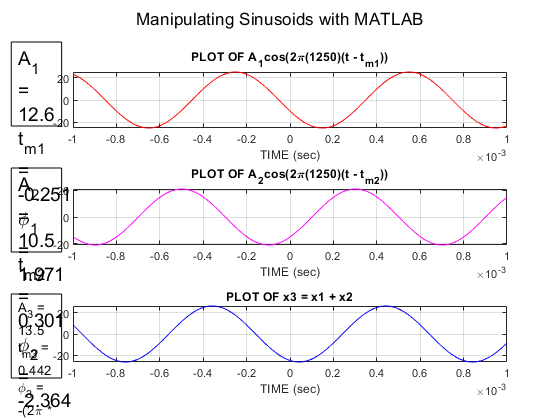
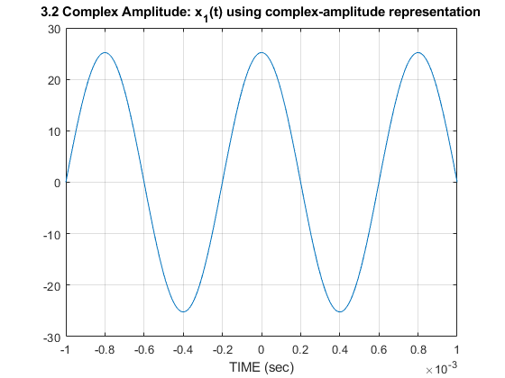

Contents
% Yonatan Carver % ECES 352 - Lab 1 % 3 - Laboratory: Manipulating Sinusoids with MATLAB clear ; clc ; close all
(a)
tt = -0.001 : 0.000001 : 0.001; % These bounds were chosen so that tt covers a range of t that will exhibit % approximately 2 cycles of the 1250 Hz sinusoids % The step size was chosen so that there are more than 25 samples per % period
(b)
A2 = 21; % age A1 = 1.2 * A2; % = 25.2 M = 7; % month of birthday D = 30; % day of birthday freq = 1250; % frequency T = 1/freq; % = 0.0008, period % tm1 & tm2 are both time shifts in the sinusoids % tm1 causes the sinusoid to be shifted to the left tm1 = -(37.2/M) * T; % = -0.0043, time delay 1 % tm2 causes the sinusoid to be shifted to the right tm2 = (41.3/D) * T; % = 0.0011, time delay 2 % Generate two 1250 Hz sinusoids with amplitude A1 & A2 and time shifts tm1 % & tm2 x1 = A1 * cos( 2 * pi * freq * (tt - tm1)); x2 = A2 * cos( 2 * pi * freq * (tt - tm2));
(c)
Sum of x1 and x2 sinusoids
x3 = x1 + x2;
(d)
subplot(3,1,1) plot( tt, x1, 'r-') grid on % title('PLOT OF x1') title('PLOT OF A_1cos(2\pi(1250)(t - t_m_1))') xlabel('TIME (sec)') annotation('textbox', [0.02 0.7 0.09 0.2], 'String', {... 'A_1 = 12.6' ... 't_m_1 = -0.251' ... '\phi_1 = 1.971'}, ... 'FontSize', 14) subplot(3,1,2) plot( tt, x2, 'm-') hold on % plot(tt, A2*cos(2*pi*1250*tt)) % for testing purposes grid on % title('PLOT OF x2') title('PLOT OF A_2cos(2\pi(1250)(t - t_m_2))') xlabel('TIME (sec)') annotation('textbox', [0.02 0.4 0.09 0.2], 'String', {... 'A_2 = 10.5' ... 't_m_2 = 0.301' ... '\phi_2 = -2.364'}, ... 'FontSize', 14) subplot(3,1,3) plot( tt, x3, 'b-') hold on % plot(tt, 26.3*cos(2*pi*1250*tt)) % for testing purposes grid on title('PLOT OF x3 = x1 + x2') xlabel('TIME (sec)') annotation('textbox', [0.02 0.1 0.09 0.2], 'String', {... 'A_3 = 13.5' ... 't_m_3 = 0.442' ... '\phi_3 = -(2\pi * T) * t_d = -3.471'}, ... 'FontSize', 10) sgtitle('Manipulating Sinusoids with MATLAB') % subplot title hold on
3.1 Theoretical Calculations
(a) & (b)
% Calculations for time_delay, amplitude, phase (phi), and omega (w) % The amplitude (P-P) of the signals were found using the findpeaks() % function. This function returns the coordinates (x, y) of the maxima on % the graph. One must convert the function's returned x value to be on the % same scale as tt (the time window). % T (period) is found by calculating the distances between two peaks of the % signal (found using the findpeaks() function), i.e. subtracting two % subsequent x values % Omega (w) is found using the equation: (2pi)/T, where T is the period of % the sinusoid % Phi (phase) is found using the equation: w*-t_d, where w is the frequency % and t_d is the time delay % x1 amplitude = 12.6 (25.2 P-P) [y_x1, x_x1] = findpeaks(x1); % find x & y values of peaks % x1_x_peaks = tt(x_x1) % get actual x values from tt % peak 1: (-0.251, 25.2) % peak 2: (0.549, 25.2) % T_x1 = 0.549 - -0.251 % T = 0.8 (same for all sinusoids) w_x1 = 2 * pi / 0.8; % w = 7.854 phi_x1 = -7.854 * -0.251; % phi = 1.971 % x2 amplitude = 10.5 (21 P-P) [y_x2, x_x2] = findpeaks(x2); % find x & y values of peaks % x2_x_peaks = tt(x_x2) % get actual x values from tt % peak 1: (-0.5, 21) % peak 2: (0.301, 21) % T_x2 = 0.301 - -0.5 % T = 0.8 (same for all sinusoids) w_x2 = 2 * pi / 0.8; % w = 7.854 phi_x2 = -7.854 * 0.301; % phi = -2.364 % x3 amplitude = 13.5 (26.3 P-P) [y_x3, x_x3] = findpeaks(x3); % find x & y values of peaks % x3_x_peaks = tt(x_x3) % get actual x values from tt % peak 1: (-0.358, 26.3) % peak 2: (0.442, 26.3) % T_x3 = 0.442 - -0.358 % T = 0.8 (same for all sinusoids) w_x3 = 2 * pi / 0.8; % w = 7.854 phi_x3 = -7.854 * 0.442; % phi = -3.471
(c)
x1_exp = A1 * exp(1j * 2500 * pi * tt); %* exp(1j * 1250 * 2 * pi * -0.0043); % x1 written in exponential form x2_exp = A2 * exp(1j * 2500 * pi * tt); %* exp(1j * 1250 * 2 * pi * 0.0011); % x2 written in exponential form x3_new = real(x1_exp) + real(x2_exp); % sum of real parts of x1 & x2 [y_x3_new, x_x3_new] = findpeaks(x3_new); % find x & y values of peaks x3_new_x_peaks = tt(x_x3_new); % get actual x values from tt % peak 1: (-0.000388, 32.8028) % peak 2: (0.0004120, 32.8028) % Amplitude = 16.4014 (32.8028 P-P)
3.2 Complex Amplitude
% Generate values of the sinusoid x_1(t) using complex-amplitude % representation: figure; plot(tt, real(x1_exp)); grid on title('3.2 Complex Amplitude: x_1(t) using complex-amplitude representation') xlabel('TIME (sec)') x11 = 25.2*exp(1j * 10.75 * pi); % x1 in the form: x + jy = -17.8191 + j17.8191 phasorr_x11 = @(x11) [abs(x11) angle(x11)]; % angle in radians phasorr_x11(x11); % = 25.2 * exp(1j * 2.3562) % phasord_x1(x11) % ------------------------------------------------------------------------- x21 = 21*exp(1j * -2.7 * pi); % x2 in the form: x + jy = -12.3435 - j16.9894 phasorr_x21 = @(x21) [abs(x21) angle(x21)]; % angle in radians phasorr_x21(x21); % = 21 * exp(1j * -2.1991) % phasord_x2(x21)
x11 = 25.2*exp(1j * 10.75 * pi); real(x11) x21 = 21*exp(1j * -2.7 * pi); real(x21)
ans = -17.8191 ans = -12.3435